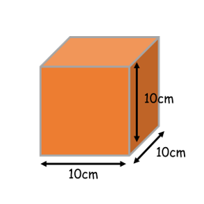
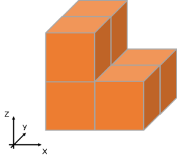
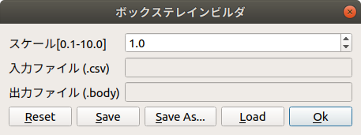
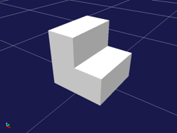

ボックステレインモデルの生成
ここでは、ボックステレインモデルを生成するための、入力ファイルの記述の仕方とモデルの生成の仕方を説明します。
入力ファイルの作成
ボックステレインビルダでは入力ファイルとしてCSVファイルを使用します。 入力ファイルを作成するときは、任意のテキストエディタまたはExcel・Calc等の表計算ソフトウェアを使用してください。 ここでは、Calcを使用して入力ファイルを作成しています。
ボックステレインビルダでは、表計算ソフトウェアの各セルをボックステレインの１つのブロックと見なします。 １つのブロックは縦10cm・横10cm・高さ10cmです。入力ファイルの各要素には、このブロックをZ軸方向から見て何個積み上げるかを記述します。 行数・列数に制限はありませんが、全ての行の要素数は同じ数にしてください。

下図の例の場合、入力ファイルには次のように記述します。

2,1
2,1
ここで１行はX軸方向、１列はY軸方向に対応します。
注釈
各要素に０以下の数値は入力できません。
ボックステレインモデルの作成
以下の手順でボックステレインモデルを作成します。
「メニュー」-「ツール」-「Bodyファイルの生成」から「ボックステレイン」を選択する。
「読み込み」ボタンを押し、表示されるダイアログから入力ファイルを選択する。
必要に応じてダイアログの「スケール」の値を変更する。
ダイアログの「保存」押す。上書きの場合は、「上書き保存」を押す。
ファイル名を入力、保存場所を指定し、「保存」を押す。
下図は、ボックステレインビルダのダイアログです。

上記の例の入力ファイルを使用した場合、下図のボックステレインモデルが生成されます。
